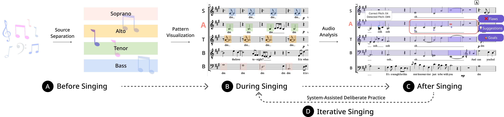
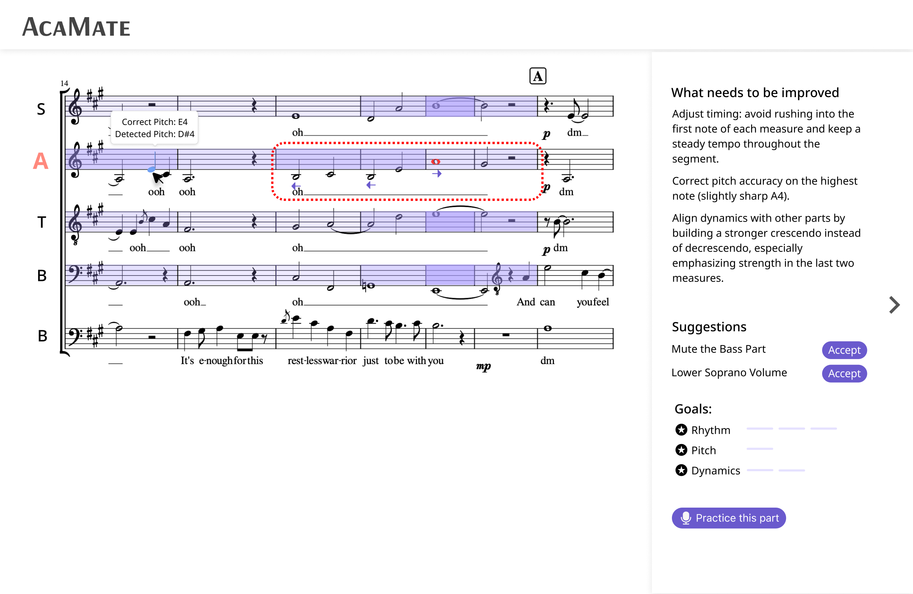

VP Separation Demo
Start (SATB + VP, Korean, Dry)
Original Mixture
Ground Truth SATB
Separated SATB (Demucs, Pre-trained)
Separated SATB (Demucs, Fine-tuned on ACappellaSet)
Ground Truth VP
Separated VP (Demucs, Pre-trained)
Separated VP (Demucs, Fine-tuned on ACappellaSet)
頭前 (SATB + VP, Haka, Dry)
Original Mixture
Ground Truth SATB
Separated SATB (Demucs, Pre-trained)
Separated SATB (Demucs, Fine-tuned on ACappellaSet)
Ground Truth VP
Separated VP (Demucs, Pre-trained)
Separated VP (Demucs, Fine-tuned on ACappellaSet)
AcaMate: Supporting Novice A Cappella Singers in Iterative Individual Practice
Novice singers in collegiate A cappella groups often struggle with individual practice due to limited guidance and the challenges of asynchronous rehearsal. We propose AcaMate, a system designed to support individual practice by integrating group recordings, visualizing musical patterns across voice parts, and providing intuitive feedback to guide iterative and deliberate practice.
 